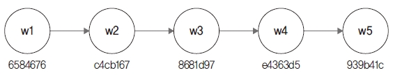
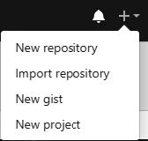
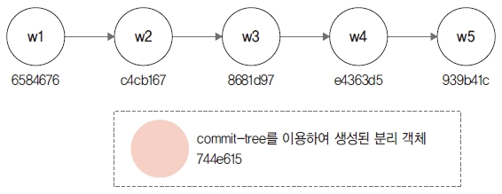
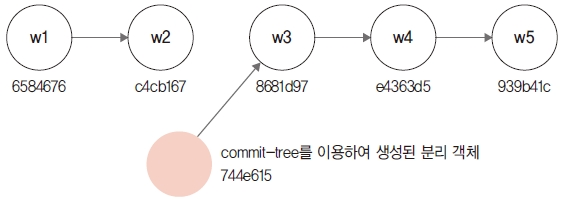
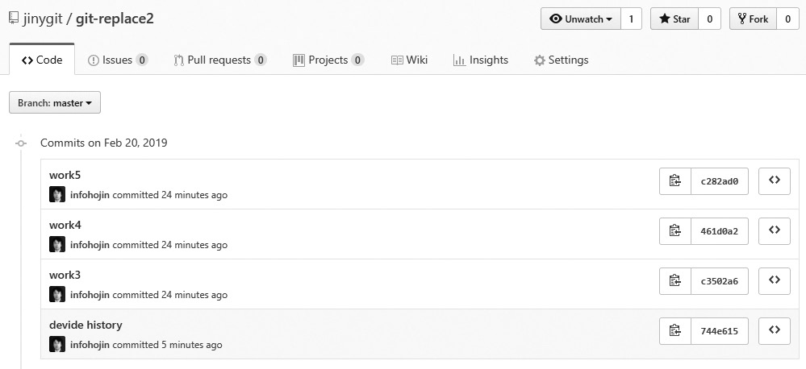
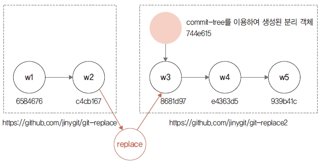

기본적으로 한 번 생성된 객체는 변경할 수 없습니다. 커밋을 변경하려면 깃의 원리를 응용해야 합니다. 커밋이 참조하는 해시 값을 속여서 다른 커밋으로 변경하는 것입니다. replace는 기존 커 밋을 다른 커밋인 것처럼 변경하는 기능입니다. 깃 저장소에서 오랫동안 작업하면 수많은 커밋 기록이 쌓입니다. 커밋이 많아지면 저장소 크기 도 증가합니다. 저장소를 분리할 수 있는 서브모듈이 있지만, 오래된 저장소와는 다릅니다. 이때 replace를 사용하면 커밋이 많은 오래된 저장소를 분리할 수 있습니다.
replace 명령어를 사용하여 저장소를 분리해 봅시다. 실습을 위해 새로운 저장소를 생성합니다.
$ cd 실습폴더
$ mkdir git-replace 새 폴더 만들기
$ cd git-replace
infoh@DESKTOP MINGW64 /e/git-replace (master)
$ git init 저장소 초기화
Initialized empty Git repository in E:/git-replace/.git/
실습을 위해 work.md 파일을 생성하고 저장한 후 커밋합니다.
infoh@DESKTOP MINGW64 /e/git-replace (master)
$ code work.md VS Code 실행
work.md
# 작업1
infoh@DESKTOP MINGW64 /e/git-replace (master)
$ git add work.md 등록
infoh@DESKTOP MINGW64 /e/git-replace (master)
$ git commit -m "work1" 커밋
[master (root-commit) 6584676] work1
1 file changed, 1 insertion(+)
create mode 100644 work.md
코드를 좀 더 수정하고, 두 번째 커밋을 합니다. 반복되는 code work.md 과정은 표시를 생략합니다.
work.md
# 작업1 6584676
# 작업2
infoh@DESKTOP MINGW64 /e/git-replace (master)
$ git commit -am "work2" 등록 및 커밋
[master c4cb167] work2
1 file changed, 2 insertions(+), 1 deletion(-)
같은 방법으로 작업5까지 순차적으로 입력한 후 여러 번 커밋합니다.
work.md
# 작업1 6584676
# 작업2 c4cb167
# 작업3
infoh@DESKTOP MINGW64 /e/git-replace (master)
$ git commit -am "work3" 등록 및 커밋
[master 8681d97] work3
1 file changed, 2 insertions(+), 1 deletion(-)
work.md
# 작업1 6584676
# 작업2 c4cb167
# 작업3 8681d97
# 작업4
infoh@DESKTOP MINGW64 /e/git-replace (master)
$ git commit -am "work4" 등록 및 커밋
[master e4363d5] work4
1 file changed, 2 insertions(+), 1 deletion(-)
work.md
# 작업1 6584676
# 작업2 c4cb167
# 작업3 8681d97
# 작업4 e4363d5
# 작업5
infoh@DESKTOP MINGW64 /e/git-replace (master)
$ git commit -am "work5" 등록 및 커밋
[master 939b41c] work5
1 file changed, 2 insertions(+), 1 deletion(-)
지금까지 작업 과정을 그림으로 표현하면 다음과 같습니다.
그림 12-2 저장소의 커밋 순서

새 저장소의 커밋들을 확인해 봅시다. 커밋 해시 값도 같이 주의 깊게 살펴보세요.
infoh@DESKTOP MINGW64 /e/git-replace (master)
$ git log --oneline --decorate 커밋 기록
939b41c (HEAD -> master) work5
e4363d5 work4
8681d97 work3
c4cb167 work2
6584676 work1
준비한 저장소에는 커밋이 4개 있습니다. 이 저장소를 2개로 분리해 보겠습니다. 1단계. 저장소를 분리할 수 있게 새로운 브랜치를 하나 생성합니다. 작업3을 기준으로 브랜치를 만듭니다.
infoh@DESKTOP MINGW64 /e/git-replace (master)
$ git branch worked 8681d97 work3 해시 값 입력
그림 12-3 분리할 위치에 브랜치 생성

깃허브에서 git-replace 저장소와 동기화할 새로운 원격 저장소를 생성합니다. 먼저 깃허브에 로 그인한 후 New 버튼 또는 + New repository를 클릭합니다.
그림 12-4 깃허브에서 새 저장소 메뉴 선택

다음 화면에서 원하는 저장소 이름을 입력하고 Create repository를 누릅니다. 필자는 gitstudy11_parent로 정했는데, 로컬 저장소 이름과 동일하지 않아도 됩니다.
그림 12-5 원하는 이름으로 새 저장소 생성

저장소가 생성되면 https://github.com/jinygit/git-replace.git처럼 주소가 나옵니다. 이 주소 와 로컬 저장소를 연결할 것입니다. 이 주소를 복사해 둡니다. 다시 깃 배시 화면으로 돌아갑니다. 이 원격 저장소에는 분리된 저장소를 저장할 것입니다. 원격 저장소를 등록합니다.
infoh@DESKTOP MINGW64 /e/git-replace (master)
$ git remote add old https://github.com/jinygit/git-replace.git 원격 저장소 등록
2단계. 1단계에서 원격 저장소를 등록할 때 사용한 별칭을 주의 깊게 살펴봅시다. 별칭 이름을 old로 등록했습니다. 등록된 원격 저장소의 remote 목록을 확인합니다.
infoh@DESKTOP MINGW64 /e/git-replace (master)
$ git remote -v 원격 저장소 목록
old https://github.com/jinygit/git-replace.git (fetch)
old https://github.com/jinygit/git-replace.git (push)
3단계. 1단계에서 생성한 브랜치를 원격 저장소로 푸시합니다. 이때 로컬 저장소의 브랜치는 분리 기준이 되는 worked 브랜치입니다. 그리고 원격 저장소로 전송되는 브랜치는 master 브랜치입 니다. 브랜치 이름을 다르게 지정하여 전송합니다.
worked 브랜치를 원격 저장소의 master 브랜치로 푸시합니다.
infoh@DESKTOP MINGW64 /e/git-replace (master)
$ git push old worked:master 커밋 전송
Enumerating objects: 9, done.
Counting objects: 100% (9/9), done.
Delta compression using up to 8 threads
Compressing objects: 100% (3/3), done.
Writing objects: 100% (9/9), 667 bytes | 222.00 KiB/s, done.
Total 9 (delta 0), reused 0 (delta 0)
To https://github.com/jinygit/git-replace.git
* [new branch] worked -> master
그림 12-6 브랜치 전송

이제 원격 저장소는 커밋 3개만 master 브랜치에 가지고 있습니다. 깃허브의 원격 저장소에서 커 밋들을 확인해 봅시다. jinygit 부분을 클릭하면 다음과 같이 커밋 목록을 확인할 수 있습니다.
그림 12-7 원격 저장소의 커밋

work1, work2, work3 커밋만 전송된 것을 확인합니다.
앞에서 우리는 저장소를 분리하려고 커밋을 지정했습니다. 또 지정한 커밋을 기준으로 브랜치를 만들고, 이를 원격 저장소의 다른 브랜치 이름으로 전송했습니다. 하지만 아직 로컬 저장소는 변 경된 것이 없습니다. 로컬 저장소는 모든 커밋 정보를 가지고 있습니다. 이제 실제적인 저장소를 분리해 보겠습니다.
4단계. 분리를 하려면 가상의 임시 객체를 하나 생성해야 합니다. 이때는 commit-tree 명령어를 사 용합니다. commit-tree는 저수준 깃 명령어입니다.
commit-tree 명령어를 사용하여 수동으로 객체를 생성합니다.
infoh@DESKTOP MINGW64 /e/git-replace (master)
$ echo "devide history" | git commit-tree c4cb167^{tree} work2의 해시 값
744e61522896c3ee222fd4f74a099964851454cf
저수준 명령어를 사용하여 임시 객체를 생성했습니다. 임시 객체는 아직 다른 어떤 객체와도 연결 되지 않고, 떨어져 있는 외톨이 객체입니다.
그림 12-8 임시 객체 생성

commit-tree를 이용하여 생성된 분리 객체
5단계. 생성된 임시 객체를 다른 커밋 객체와 리베이스하여 병합합니다.
infoh@DESKTOP MINGW64 /e/git-replace (master)
$ git rebase --onto 744e615 c4cb167 리베이스 병합(임시 객체)
First, rewinding head to replay your work on top of it...
Applying: work3
Applying: work4
Applying: work5
새로 생성된 임시 객체와 리베이스되었습니다. 작업한 결과를 로그로 확인해 봅시다.
infoh@DESKTOP MINGW64 /e/git-replace (master)
$ git log --oneline 커밋 기록
c282ad0 (HEAD -> master) work5
461d0a2 work4
c3502a6 work3
744e615 devide history
work1과 work2 커밋이 사라졌습니다. 이전에 있던 work1과 work2 커밋은 work3과 연결 고 리가 끊어져 분리되었습니다. 그 대신 로그 기록에는 최상위 부모 커밋이 임시 객체(744e615)로 변경되었습니다.
그림 12-9 리베이스 변경 
commit-tree를 이용하여 생성된 분리 객체
새로운 원격 저장소를 또 하나 생성합니다. 이곳에는 분리된 저장소를 등록할 것입니다. 필자는 git-replace2란 이름으로 생성했습니다. https://github.com/jinygit/git-replace2.git 주소를 복사해 둡니다. 생성된 원격 저장소를 remote 명령어로 등록합니다.
infoh@DESKTOP MINGW64 /e/git-replace (master)
$ git remote add origin https://github.com/jinygit/git-replace2.git 원격 저장소 등록 이번에는 저장소 별칭을 origin으로 정했습니다.
6단계. 분리 작업한 로컬 저장소를 origin 원격 저장소로 푸시합니다.
infoh@DESKTOP MINGW64 /e/git-replace (master)
$ git push -u origin master 커밋 전송
Enumerating objects: 12, done.
Counting objects: 100% (12/12), done.
Delta compression using up to 8 threads
Compressing objects: 100% (6/6), done.
Writing objects: 100% (12/12), 939 bytes | 234.00 KiB/s, done.
Total 12 (delta 1), reused 0 (delta 0)
remote: Resolving deltas: 100% (1/1), done.
To https://github.com/jinygit/git-replace2.git
* [new branch] master -> master
Branch 'master' set up to track remote branch 'master' from 'origin'.
푸시한 원격 저장소(깃허브)를 확인해 봅시다.
그림 12-10 분리된 원격 저장소

임시 객체로 시작되는 커밋 기록 3개를 확인할 수 있습니다.
임시 객체를 이용하여 로컬 저장소의 커밋 연결 고리를 분리했습니다. 연결 고리가 분리된 커밋들 은 각각 두 원격 저장소로 푸시되었습니다. 이번에는 분리된 두 저장소를 저장소 하나로 연결해 보겠습니다.
7단계. 분리된 두 원격 저장소 중에서 마지막에 작업한 커밋으로 원격 저장소를 복제합니다.
$ cd 실습폴더
$ git clone https://github.com/jinygit/git-replace2.git git-replace2 저장소 복제
Cloning into 'git-replace2'...
remote: Enumerating objects: 12, done.
remote: Counting objects: 100% (12/12), done.
remote: Compressing objects: 100% (5/5), done.
remote: Total 12 (delta 1), reused 12 (delta 1), pack-reused 0
Unpacking objects: 100% (12/12), done.
복제된 로컬 저장소의 로그를 확인합니다.
infoh@DESKTOP MINGW64 (master)
$ cd git-replace2 복제 저장소 이동
infoh@DESKTOP MINGW64 /e/git-replace2 (master)
$ git log --oneline --decorate 커밋 기록
c282ad0 (HEAD -> master, origin/master, origin/HEAD) work5
461d0a2 work4
c3502a6 work3
744e615 devide history
복제된 저장소는 분리된 커밋들만 가지고 있습니다. 이전의 커밋 정보들은 보관되어 있지 않습니 다. 이전의 커밋 정보들이 보관된 원격 저장소를 remote 명령어로 등록합시다.
infoh@DESKTOP MINGW64 /e/git-replace2 (master)
$ git remote add worked https://github.com/jinygit/git-replace.git 원격 저장소 등록 8단계. 원격 저장소를 패치하여 커밋들을 가져옵니다. 패치로 가져오는 이유는 수동으로 커밋을 변경하여 병합하기 때문입니다.
infoh@DESKTOP MINGW64 /e/git-replace2 (master)
$ git fetch worked 커밋 내려받기
warning: no common commits
remote: Enumerating objects: 9, done.
remote: Counting objects: 100% (9/9), done.
remote: Compressing objects: 100% (3/3), done.
remote: Total 9 (delta 0), reused 9 (delta 0), pack-reused 0
Unpacking objects: 100% (9/9), done.
From https://github.com/jinygit/git-replace
* [new branch] master -> worked/master
패치로 가져온 worked의 로그 기록을 확인해 봅시다.
infoh@DESKTOP MINGW64 /e/git-replace2 (master)
$ git log --oneline worked/master 커밋 기록
8681d97 (worked/master) work3
c4cb167 work2
6584676 work1
분리된 이전의 커밋들을 확인할 수 있습니다.
9단계. 이제 origin/master의 c3502a6과 worked/master의 8681d97을 replace 명령어로 연 결합니다.
infoh@DESKTOP MINGW64 /e/git-replace2 (master)
$ git replace c3502a6 8681d97 커밋 연결
그림 12-11 원격 저장소 2개 연결

replace 명령어를 사용하여 두 커밋을 연결했습니다. 저장소의 로그를 확인합니다.
infoh@DESKTOP MINGW64 /e/git-replace2 (master)
$ git log --oneline 커밋 기록
c282ad0 (HEAD -> master, origin/master, origin/HEAD) work5
461d0a2 work4
c3502a6 (replaced) work3
c4cb167 work2
6584676 work1
분리된 저장소가 다시 하나로 묶인 것을 확인할 수 있습니다.